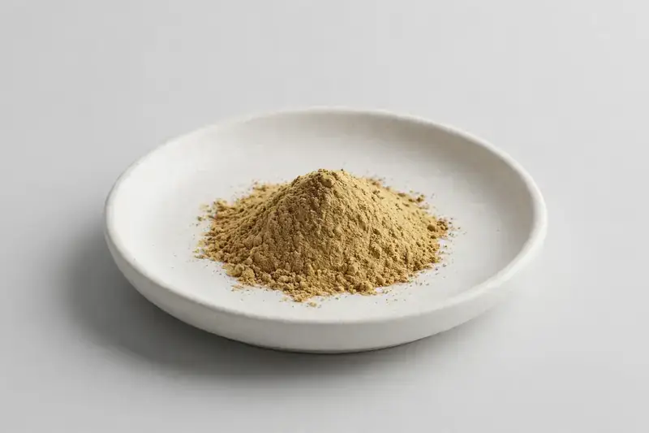

Salix alba — bark extract standardized to salicin, positioned around joint comfort and mobility formulations.

Overview
White willow bark is a long-traded botanical in joint comfort and mobility supplement categories. Extract is standardized to salicin, with 15-25% commonly requested. We source through vetted partner producers and confirm each buyer's marker level, ratio and carrier requirements before providing a quotation.
Specifications below reflect commonly requested options in the market — not a stock list. Share your target spec and we'll confirm exactly what we can supply, honestly.
| Specification | Details |
|---|---|
| Botanical identity | Salix alba, bark |
| Marker compound | Salicin — commonly requested: 15-25% (HPLC) |
| Appearance | Light yellow-brown to brown fine powder |
| Analytical methods | Methods referenced in buyer specifications: HPLC |
| Mesh size | Typically 80–100 mesh (confirm per inquiry) |
| Testing | COA/TDS arranged on request; scope agreed per your spec |
Applications
Documentation
We don't claim in-house labs or certifications we don't hold. COA and TDS documents can be arranged on request, and testing scope is agreed against your specification before supply.
FAQ
Related products
Echinacea purpurea
Key marker: Echinacoside
View specs →Valeriana officinalis
Key marker: Valerenic Acids
View specs →Trigonella foenum-graecum
Key marker: Saponins
View specs →Andrographis paniculata
Key marker: Andrographolide
View specs →Tribulus terrestris
Key marker: Saponins
View specs →Buyer guides
Buyer’s guide
Identity, actives, heavy metals, micro — what each section of a Certificate of Analysis means, and the red flags that tell you to walk away.
Read the guide →Buyer’s guide
Section-by-section COA walkthrough — marker assays, heavy metals, micro panels, red flags, and a buyer checklist.
Read the guide →Send your target spec and volumes — we'll respond with a tailored quotation.
Request a Quote